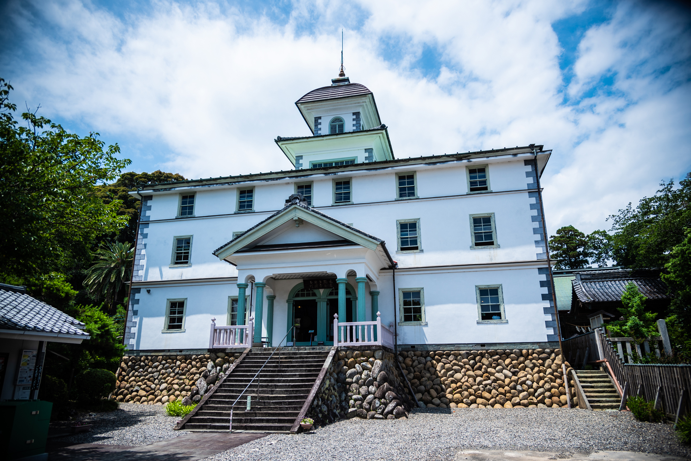
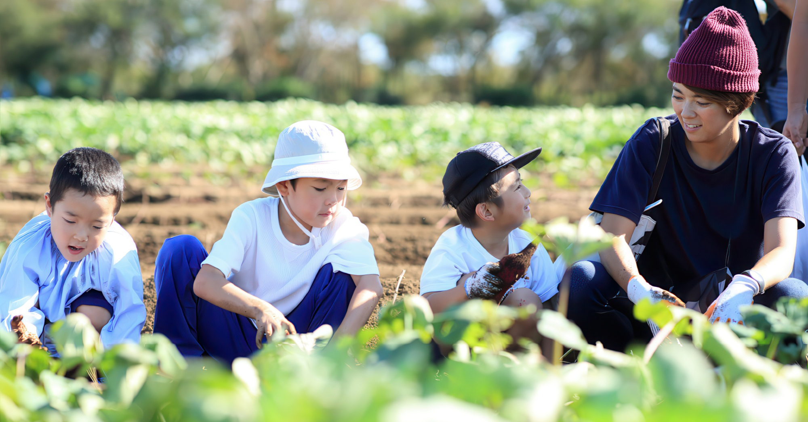
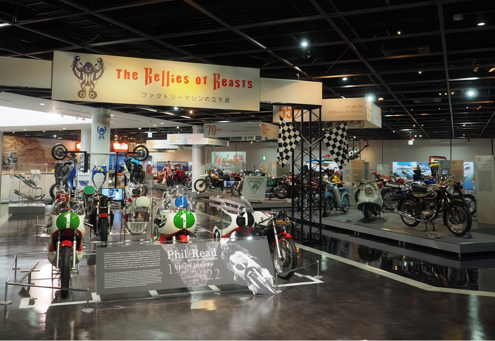

01
温故知新！

“今あるもの”から
“新しい価値”を創出！
引き継がれてれてきた様々な「地域資源」の価値を見つめ直し、訪れる方々にとって新たな「体験価値」に転換していく試みです。脈々と流れる“土地の物語”を感じてみませんか？


“いわたおんぱく”とは、「いわた温故知新博覧会」の略称です。
磐田の育んできた文化や歴史、自然、特色ある産業や個店のサービス、
人の魅力やライフスタイルなどの「地域資源」を題材に、
“おんぱくプログラム”（小規模な体験プログラムやゼミナール等）として企画・編集し、
「博覧会」の名のもとに市内全域で実施する観光振興イベントです。

引き継がれてれてきた様々な「地域資源」の価値を見つめ直し、訪れる方々にとって新たな「体験価値」に転換していく試みです。脈々と流れる“土地の物語”を感じてみませんか？

「非日常（感動・満足）型」の観光・余暇スタイルから、「地域の生活エリアでの交流と人とのふれあい（感心、共感）型」へ。“日常生活のちょっと先“にある余暇の空間と時間がかけがえのないものになっていきます！

磐田に根付く生活文化、産業や携わる人に魅力を感じたり、共感したり、従来とは違う特別な地域への好奇心など、お客様ご自身も情報発信したくなるような双方向型の関係性を気づけるスタートラインになれば！という思いです。
プログラムを企画し実施するプログラム・パートナー、体験する参加者の方々、訪れた人を受け入れるまちの人、開催を支えてくれる方々、磐田での時間と空間の中で人と人のつながりを感じてみましょう！
いわた温故知新博覧会